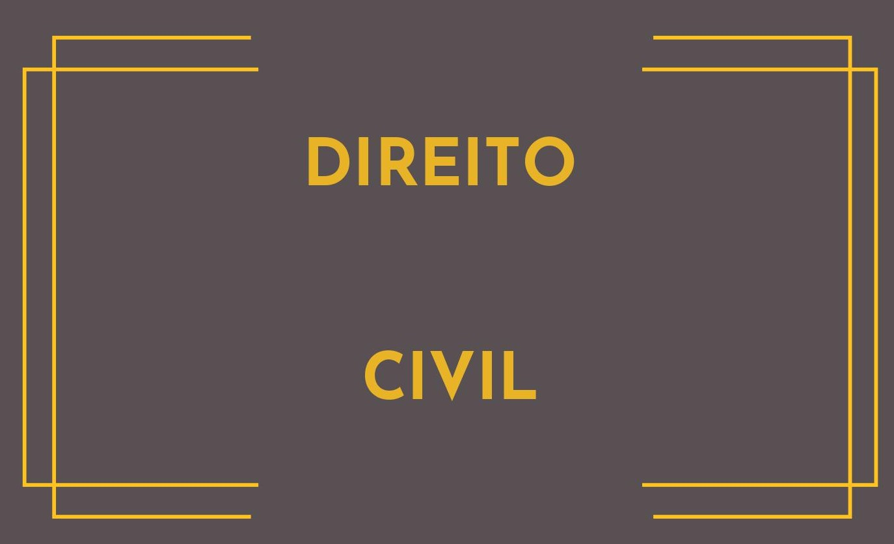
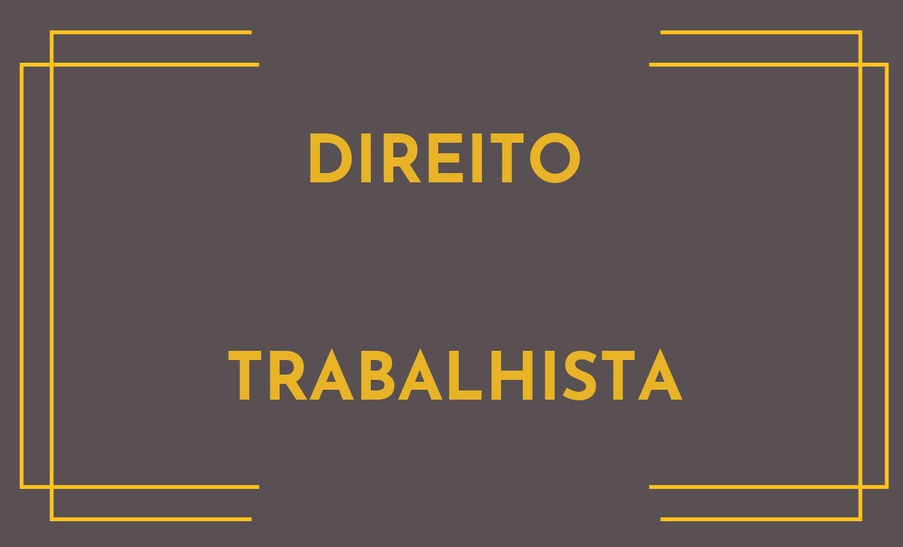
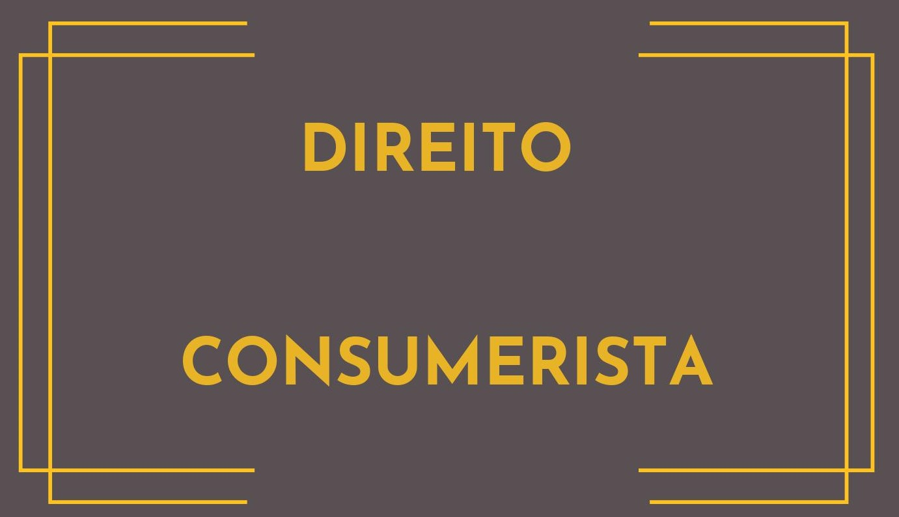

O Lopes & Andrade Advogados Associados é
um escritório de advocacia situado em
Salvador/BA, com atuação em todo território
nacional.
Com uma equipe especializada, visa atender
as demandas jurídicas dos seus clientes, de
maneira estratégica e responsável.
Seus sócios atuam em diversas áreas do
Direito, prestando um atendimento completo,
na esfera extrajudicial e/ou contenciosa.
Nossa missão é oferecer um atendimento de
excelência aos nossos clientes, através de um
planejamento estratégico, voltado para resolução
dos problemas apresentados.
A equipe do escritório pauta as suas decisões na
legalidade, ética e sempre levando em
consideração a individualidade de cada cliente.
O Lopes & Andrade oferecem os serviços de
assessoramento jurídico objetivando a prevenção
de potenciais litígios e entraves em relação às
exigências legais. Os advogados analisam
contratos, legalidade das decisões, cumprimento
das obrigações, entre outras atividades. Para,
assim, orientar a melhor decisão no caso concreto.

PRINCIPAIS SERVIÇOS
- Implantação de rotinas preventivas;
- Mediação trabalhista;
- Atuação em processos de jurisdição voluntária para
- homologação extrajudicial;
- Propositura de ações, elaboração de defesas,
realização de audiências e interposição de recursos;
- Sustentação oral;
- Capacitação de prepostos para atuação em
audiências;
- Atuação em sede de execução para redução do
passivo trabalhista;
- Atuação no Direito Coletivo do Trabalho;
- Defesa no processo administrativo do Trabalho, em
razão de fiscalizações realizadas pelo MTE, MPT e
INSS

PRINCIPAIS SERVIÇOS
- Proposição de ações judiciais, realização de defesas,
participação de audiências, interposição de recursos;
- Sustentação oral;
- Confecção e análise de contratos;
- Recuperação de créditos -cobranças judiciais e
extrajudiciais;
- Anulação de créditos originários de protestos
indevidos;
- Ações de inventário;
- Reconhecimento e dissolução de união estável;
- Divórcio;
- Investigação de paternidade;
- Alimentos - Execução e revisional.

PRINCIPAIS SERVIÇOS
- Atuação judicial, consultiva e preventiva nas relações
entre fornecedores e consumidores;
- Confecção e análise de contratos, com adequação ao
Código de Defesa do Consumidor;
- Revisão de procedimentos internos das empresas,
consoante a legislação consumerista;
- Atuação em processos administrativos, como os
instaurados, bem como nas celebrações de
TAC(Termo de ajustamento de Conduta), perante o
Ministério Público e órgãos de defesa do consumidor;

Endereço: Avenida Carneiro da Rocha, nº
180, Caminho de Areia, Salvador/BA.
📞 (71) 99143 -2260